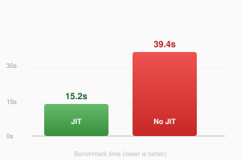

Boost 1.2.20
Gives JavaScript a real speed boost by turning on JIT in 3rd party apps!
Features
- Works in every app, no setup
- Leaves SpringBoard and daemons alone


iPhone 4, iOS 6.1.3, 15 runs each2.6x fasterwith Boost
Show in fullscreenRun the benchmark yourself
Safari already has the JIT entitlement Boost adds to other apps, so running it here won't show a real JIT vs no-JIT gap. Install the tweak and test it from a regular app instead.
Details
Version: 1.2.20
Last updated: Nov 2, 2026
Supported iOS versions: iOS 4.3 to 9.3.6
64-bit compatible: No
Dependencies: mobilesubstrate, preferenceloader
Identifier: com.koutsie.boost
Section: Tweaks
Author: koutsie
Size: 163 KB
Like my work?  fedi
fedi